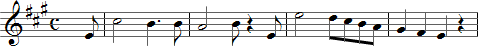

Tämä tehtävä on johdanto mordentille. Laulusta ei kuitenkaan löydy yhtään nykykäsityksen mukaista mordenttia eli pralltrilliä, vaan joukko nk. kaksoisjälkiheleitä. Kun tehtävissä 8a ja 8b harjoitellaan yhden äänen koristelua, tässä harjoituksessa laajennetaan kahteen. Iffert kuvaa tätä ornamenttia taipuisaksi ja keveäksi yhteydeksi kahden äänen välillä ilman terävää aksenttia ja listaa termille myös ilmaisut kaksoisetuhele, liukukaksoisetuhele ja kaksoishele.
Tempo pitää suhteuttaa sävellyksen luonteeseen, mutta sen pitää olla mieluummin nopea kuin hidas.
Ennen kuin laulat koko nuottikuvan ”notkeudella ja tarmolla”, harjoittele yksinkertaistetuilla muunnoksilla. Aloita poistamalla kaikki pikkumelismat ja laula jäljelle jäävä melodiarunko:
mi - do2 - si - si - la - si
mi - mi2 - re2 - do2 - si - la - sol - fa - mi
mi - do2 - si - si - la - sol
do2 - si - la - sol - fa - mi
mi - mi - fa - sol - la - si - sol
sol - sol - la - si - do2 - re2 - si
mi - do2 - si - si - la - sol - fa
re2 - si - la - mi - fa - sol - la - si - do2
mi2 - re2 - do2 - si - la - sol - fa - mi - la - do2 - si - la

Tee sen jälkeen pehmeämpi versio jälkiheleestä muuttamalla
kuvio pisteelliseksi kahdeksasosaksi ja
kahdeksi kolmaskymmeneskahdesosatrioliksi, ja muut kolmaskymmeneskahdeksasosat
kuudestoistaosiksi.
Laula sitten alkuperäinen melodia nuotista - jatkuvasti vokaliisina - ja yritä säilyttää edellisen harjoituksen tunnelma, jossa koristelu korostaa seuraavaa ääntä. Valitse tempo niin etteivät pikkunuotit tule painotetuiksi.
Kokeile sen jälkeen laulaa kaikki kolme eri versiota tekstin kanssa. Kuusitavuisella runolla tämän pitäisi periaatteessa olla pulmatonta. Alkuperäisen nuotinnetun melodian kanssa pitää varmuuden vuoksi suunnata fraasi parittomien tahtien ykkösiin ja välttää kolmosten painottamista.
Laulun rytmiikka täytyy huomioida sanojen oikeaoppisen painotuksen kustannuksella. Kuten edellisessä harjoituksessa, tässäkin pitää tehdä kompromisseja. Onneksi runomitta on kuitenkin tässä laulussa sallivampi.
Laulun huolettoman ja iloisen vaikutelman on noustava libreton yläpuolelle. Resitatiivi ennen aariaa antaa yleensä ymmärtää, että valtava onnentunto useammin johtaa kyyneliin kuin puhumiseen. ”Lörpöttelevä” melodia antaa pian ironisen tulkinnan Metastasion runolle.
Lähde
Forshufvud, G. 1994. Con lieve fiato. Lärarhandledning till Nicola Vaccajs Metodo pratico. Göteborgs universitetet.